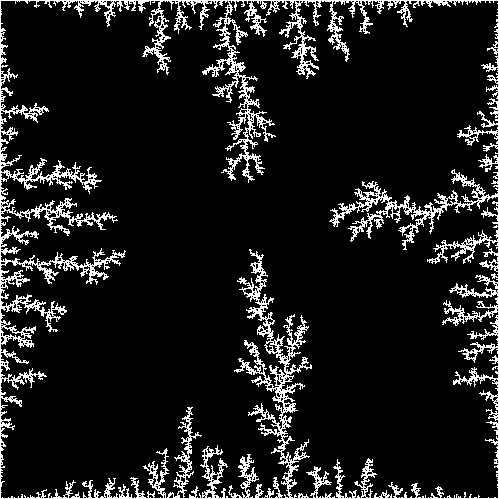
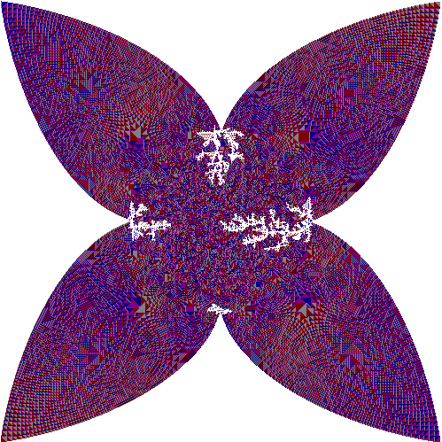
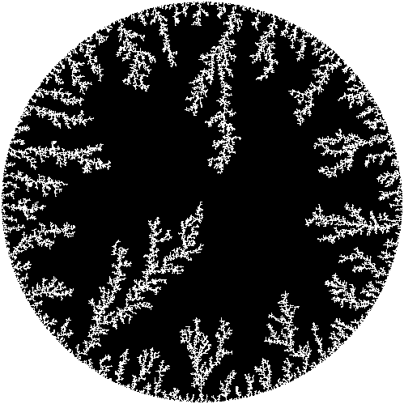
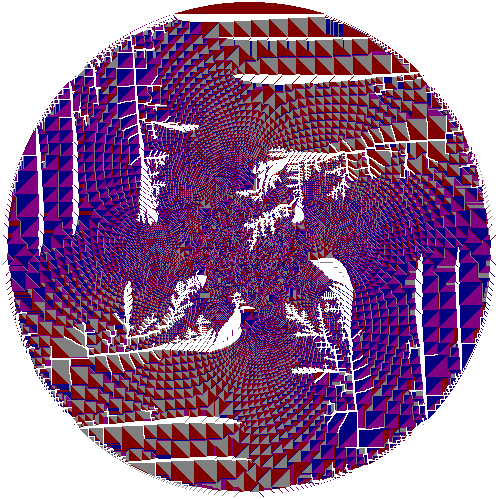
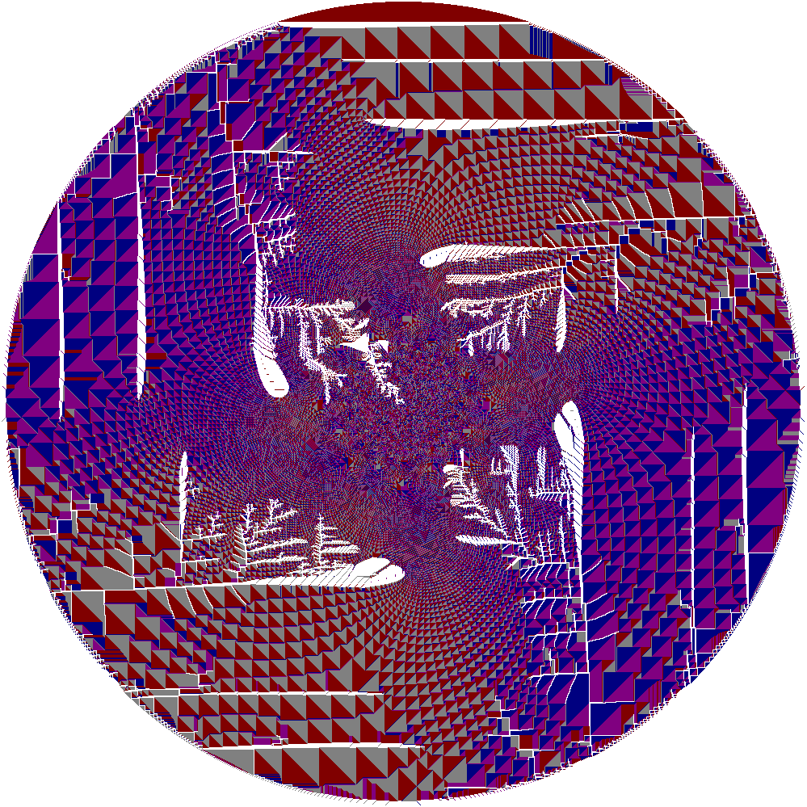

Let A be a finite region in Z^2. A random walker starts at the origin and walks until it reaches a point adjacent to the
complement of A. This point is then removed from A, and the process is iterated until the origin itself is removed.

Internal DLE starting from a box of side length 500. Points in A are colored black, deleted points are colored white.

Rotor internal DLE starting from a box of side length 500.

Internal DLE starting from a disc of radius 250.

Rotor IDLE starting from a disc of radius 250.

Rotor IDLE starting from a disc of radius 500.